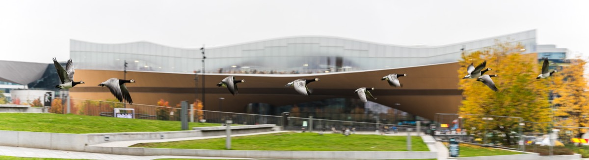
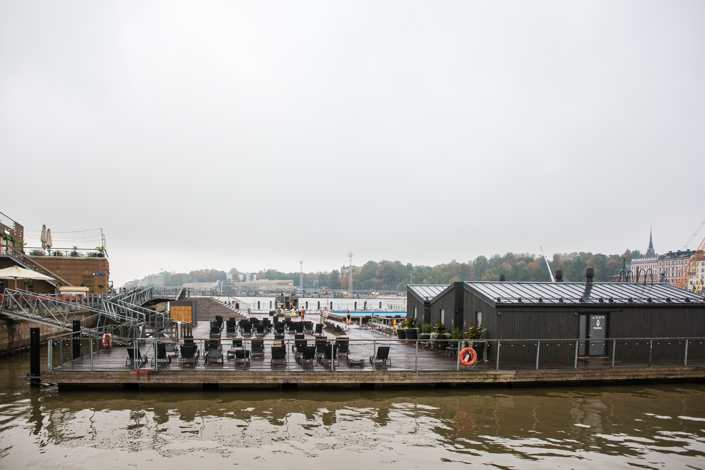
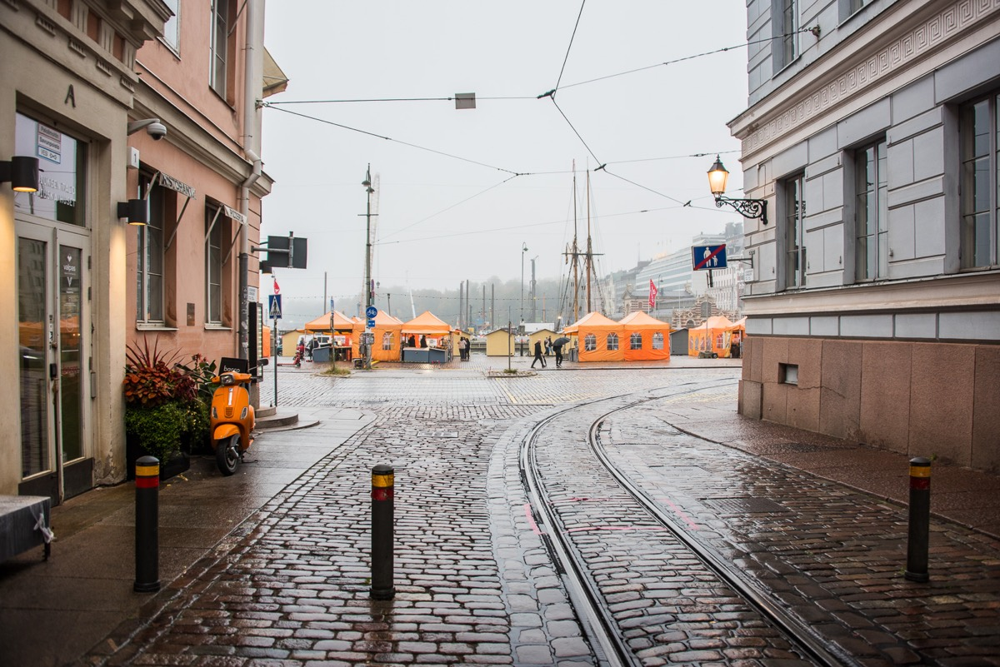
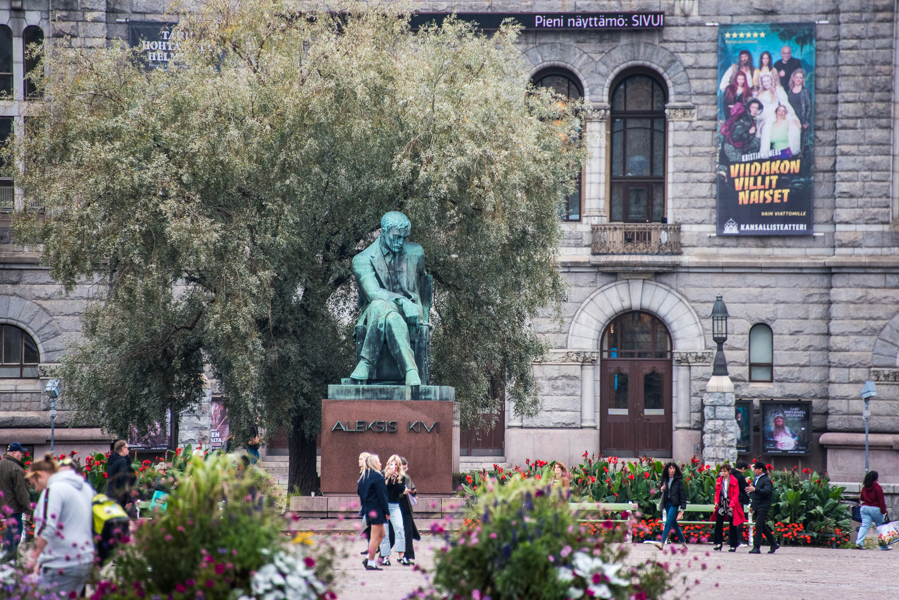

A Town No One
Wanted to Move To
The guide starts the 11 a.m. tour the way many free-tour guides do: by asking the group where they have come from and why. The answers range from Australia to London, Warsaw to Tallinn, and one visitor who last saw Helsinki thirty years ago. The guide himself is not from Finland, which colours much of what follows.
His opening argument is that Helsinki looks and feels different from the rest of Finland, and that the reason is political. For roughly six and a half centuries Finland was the eastern half of the Swedish kingdom, and during all that time its principal city was Turku, two hours west by train. Helsinki was a small harbour town that figured nowhere in the national story.
Sweden's King Gustav Vasa founded Helsinki in 1550, intending it to rival Tallinn across the Gulf. It didn't work. Noble and merchant families preferred the comfort of Turku and the other coastal towns, and the new settlement stayed small and cold for the best part of two centuries. (It was also moved: in 1640 the town was relocated from the mouth of the Vantaa river to its present peninsula — a detail the guide skips.)
Then, in 1809, Russia took Finland from Sweden and made it a Grand Duchy. Three years later Tsar Alexander I moved the capital to Helsinki — closer to St Petersburg, and small enough to remodel without arguments. Its smallness was the qualification. He hired a German-born architect, Carl Ludvig Engel, to build a capital from a near blank page. Engel gave the new centre a St Petersburg accent, and that is the reason Senate Square looks the way it does.
The guide also promises a Helsinki of three "hearts": the classic one, where the tour begins; the dynamic one around the railway station; and the new, modern one at Citizens' Square, where the walk ends. It is a tidy way to organise two hours and about three kilometres, and he sticks to it. The walk is flat, he says, with only a few steps at the Orthodox cathedral.
Senate Square, Agricola
& the Tsar on the Plinth
The guide points at the yellow building first: the old Senate, completed in 1822, which gave the square its name. Finland has no senate now; the institution was replaced by a parliament after independence, and the building is now the seat of the government, with the Prime Minister's office inside. Facing it across the square is the University of Helsinki's main building, finished in 1832. The university itself is older, having begun life in Turku as the Royal Academy and moved after the Great Fire of Turku in 1827 — The guide mentions only the relocation.
Above both, on the hill, stands the white Lutheran cathedral, the most photographed building in Finland. The guide's pitch is that its austere interior — pale, plain, almost empty — is the Nordic Lutheran temperament in architectural form. His Spanish-language groups, he says, find it strikingly simple — but elegant all the same.
Inside the cathedral is a statue of Mikael Agricola, who holds a book in his hand: the first ever printed in Finnish, an alphabet primer published in 1543. The guide's version of the story is that Martin Luther sent him to Finland, found that Finns had no written language of their own — Finnish being a dialect of the Swedish kingdom's lesser tongues — and spent two decades writing down the sounds.
The fuller truth is slightly different. Agricola studied under Luther and Melanchthon at Wittenberg, then returned to Turku as a priest and later bishop, and set about writing Finnish as it sounded. His 1543 primer, Abckiria, is the oldest surviving book in Finnish. The guide's shorthand — "Britain has Latin, Finland has Agricola" — is close enough to the truth to be worth keeping.
In the middle of the square stands the statue of Alexander II, unveiled in 1894. The guide tells it as the story of the tsar who gave the Finns their language, and he is right about the date and about the affection. In 1863 Alexander II issued the Language Decree, which began a process to lift Finnish out of second-class status. It did not make Finnish the sole official language; it gave it equal standing with Swedish in administration, phased in over twenty years. The guide's claim that before the decree "if you wanted to be somebody you had to speak Swedish or Russian" is fair.
"Many of Alexander II's decisions made Finns feel like they had more autonomy. Later, Nicholas II took a lot of it back — and that led to the independence of 1917."
The guide adds that this is one of the only tsar statues still standing outside Russia. That claim is hard to check, and is left as his.
The Oldest House &
the Library with a Tunnel
From the steps of the cathedral, the guide points to a bluish-grey building at the corner of the square. This is Sederholm House, built in 1757 and the oldest building in central Helsinki. The guide calls it "the only one from Swedish times", which goes a little too far — it is the oldest in the centre, which is not quite the same as the only survivor of the period. It now houses part of the Helsinki City Museum, which the guide says has free admission.
Just behind it stands the National Library of Finland, designed by Engel and, by the guide's account, the exact opposite of the cathedral: a plain Lutheran church outside and in, and a palace inside, with an ornate, many-columned reading room and a free entrance. It was closed on the Saturday of the tour; the guide shows the group a photograph on his phone and says it doesn't do the room justice.
The library began as the Imperial Alexander University library, and it still keeps a great collection of Russian books published under the empire. The guide says they are held in a separate building reached by a tunnel (we could not confirm the arrangement), and that "those books do not exist in the Russian Federation any more", because much of the empire's printed output was destroyed there in later centuries.
The Slavonic Library is genuine and remarkable. The claim that it holds titles surviving nowhere in Russia is more sweeping than can easily be proved, and is repeated here as the guide's.
Golden Lions, a Golden Ship
& a Wild Man
The guide does not name the next building. From his description — a late-19th-century façade with a figure of Alexander I, a pair of gilded lions and a row of heraldic shields — it can be identified as the House of the Estates, finished in 1891 and designed by Gustaf Nyström. (That identification is ours, not the guide's.) Its pediment shows Alexander I confirming Finland's laws and rights at the Diet of Porvoo in 1809 — in the guide's telling, the moment the territory became a Grand Duchy with its own identity rather than an ordinary province.
The lions are the lions of the Finnish coat of arms. In the guide's reading one holds a Swedish sword and treads on a Russian one — Finland between its two former rulers. Below them run the coats of arms of Finland's provinces and towns, which the guide turns into a guessing game. Which is Helsinki's? The group guesses the centre. It is the golden ship, which stands for the sea route that brought Helsinki into being. The two Swedish-looking flags in the middle belong to Turku, the old capital.
Then the guide points to an odd figure: a shirtless, trouserless man wielding a broken stick, in the arms of Lapland. According to the symbolism, he stands for "the bravery and wildness of the north".
The guide says the Sámi people — the indigenous people of northern Scandinavia — do not like it; they say it is not how they want to be represented, and prefer their own flag. He shows the group the Sámi flag on his phone. The flag, he says, has a circle that stands for the Arctic Circle. That last part is wrong: the ring on the Sámi flag represents the sun and the moon. The point about the wild man is the guide's report of Sámi opinion, and is repeated as his.
An Interlude
in Lapland
The wild man sends the guide into a long digression that turns out to be one of the warmest parts of the tour. He has spent several winters in Rovaniemi, in temperatures of minus 35, and the group asks follow-up questions about reindeer, northern lights, and snowshoeing.
"The reindeer are really humble animals — except the alpha male. You see him with a huge horn, taller than his own body, steam coming from his nose. You don't get close to that one."
He explains that Sámi clothing is a kind of family identity card: the patterns tell you which family someone belongs to, and whether they come from northern Norway, Sweden, Finland or Russia's Kola Peninsula. Northern lights season, he adds, had already begun three weeks earlier, and he sees them most weeks without tiring of them.
The guide tells the group about meeting Santa Claus in Rovaniemi, and says that when he switched to Spanish Santa switched with him. He asked Santa about Korvatunturi, the sacred fell in the far north where, according to Finnish legend, Santa really lives. "Ear fell" is the name's meaning, and the guide explains that the shape lets you shout and hear an echo, which is how Santa hears children's wishes. The legend of Santa at Korvatunturi dates from a 1927 radio broadcast, and is still a Finnish institution.
The guide also says that "the European Union recently certified again" that Santa's address is Rovaniemi. We could find no record of any such certification, and take it as a joke told straight.
Snellman &
the Scarred Plinth
In front of the Bank of Finland stands a bronze of Johan Vilhelm Snellman, the philosopher and statesman whom the guide calls "the father of the Finnish markka". The markka was introduced in 1860 under his guidance, and it served as Finland's currency until the country joined the euro in 2002. Snellman's birthday, 12 May, is a flag day.
Look at the pedestal and you will see the scars. The marks are bomb damage from Soviet air raids on Helsinki on 26–27 February 1944, during the Continuation War. The guide says a bomb destroyed a classic building on the corner and damaged the whole area; the city rebuilt everything — except the plinth, which was left as a reminder.
The Harbour, the Icebreakers
& the New Bridge
"Welcome to the fresh waters of the Baltic," says the guide, as the group arrives at the water's edge. His point is that all this will soon be frozen: it is normal for the sea ice to reach at least fifty centimetres, he says, and in a hard winter ninety. Every small boat in sight will be out of the water by then; only the icebreakers stay.
Finland builds and operates some of the world's best-known icebreakers, and the guide says that Helsinki hosts the biggest fleet in the European Union and that Finnish designers are collaborating with the United States on new ships. We have not been able to verify either claim in detail. The ferries still run for now, but each needs an icebreaker to open the route in the early morning. There is also an icebreaking ferry that runs all year, as part of the public transport system.
"When everything is frozen, people go onto the ice — running, walking the dog, with children in pushchairs, even on bicycles and motorcycles. I've walked seven kilometres from the coast."
He then gives a short talk on what to do if you fall through. Keep calm, extend your arms, kick your legs until you are horizontal, and crawl out the way you came in. It is the guide's own informal advice rather than official guidance, and he is quick to say that "the ice is never safe".
Pointing east, the guide shows the group the new bridge that opened this year. It is the one that "was not made for cars" but for pedestrians, cyclists and wheelchair users, with a tram line on it too. Next to it is Korkeasaari, the zoo island.
It is Kruunuvuorensilta, which opened to pedestrians and cyclists on 18 April 2026, linking Korkeasaari and Kruunuvuorenranta. It is 1,191 metres long, and the longest and tallest bridge in Finland. The guide calls it "the longest pedestrian bridge in the world", which overstates it: it is a car-free bridge designed for public transport, walking and cycling, with trams still to come.
On the way, the group meets a delivery robot rolling along the pavement, and the guide gives it a short biography. The robots became popular after the pandemic, he says. In the first year they kept crashing into each other and falling into the harbour, and people had to fish them out. Nobody steals them: "I trust society. Finnish society." He says one robot once asked a construction digger to move — and that the digger driver obliged.
Uspenski Cathedral &
the Bricks from Åland
Uspenski Cathedral stands on a rocky hill at Katajanokka. It is the main church of the Finnish Orthodox Church and is claimed to be the largest Orthodox church in Western Europe. The guide says Estonia counts as Eastern Europe, which is why Helsinki qualifies. A funeral was in progress during the visit, so the group does not go in.
The cathedral was designed by the Russian architect Aleksey Gornostayev and completed in 1868 after his death. Around 700,000 bricks came by barge from the Bomarsund fortress on the Åland Islands, which had been demolished after the Crimean War. The guide shows a map on his phone: the biggest island of Finland, he says, lying between Stockholm and Turku.
In the Crimean War the Franco-British fleet captured and destroyed Bomarsund in 1854. Under the 1856 peace treaty the islands were demilitarised, and they remain so; they are also Finland's only autonomous region and are Swedish-speaking. The guide says that men born in Åland are not called up for Finnish military service, which is broadly correct — they are exempt from conscription.
The guide's claim that Orthodox believers made up about 40 per cent of Finland's population when the cathedral was built, and only 3 per cent now, is not supported. The Orthodox Church of Finland today has around 60,000 members, roughly 1 per cent of the population, and the claim of a 40 per cent share is one we could not confirm and have left out. His real point — that Helsinki is where west and east meet — stands.
Katajanokka &
the Moomin in the Park
Below the cathedral is a small park with a bronze Moomin, and the guide introduces it as "a friend of mine". It is Tove Jansson Park, in the district where the author of the Moomin books grew up; the park was renamed after her in 2014, the hundredth anniversary of her birth. The Moomin statue, by sculptor Matti Kalkamo, stands about 60 centimetres tall and is designed to be hugged — which, the guide says, was exactly what local children asked for. It is smooth all over, and the children climb on it.
The guide grew up far from Finland, where the Moomin cartoons were never shown. The first time he saw one was when the doors opened at Helsinki Airport and a two-metre-tall white creature loomed in front of him. He thought it was an event mascot.
Now he tells groups that a way to make Finnish friends is to talk about Moomins: "Everyone has something Moomin hidden somewhere — a wallet, earrings, a water bottle. They will start smiling slightly." Moomins, he says, are good trolls. Not every Finnish troll is.
Katajanokka is also one of Helsinki's Art Nouveau (Jugend) districts, and the guide calls it the second-largest collection of Art Nouveau buildings in Europe after Riga. That is a common local boast; we have not verified the ranking. The Katajanokka and Ullanlinna streets are, he adds, among the most beautiful in the city. (One of the streets he named is most likely Huvilakatu in Ullanlinna; that identification is ours.)
Allas, Löyly &
the Free Sauna
"Welcome to the maximum expression of Finnishness," says the guide, as the group stops by the Allas Sea Pool. He explains the format: sauna at roughly 75°C for five to ten minutes, then a plunge into the Baltic, which that day was around 7°C. "You hear screams of happiness. That is people releasing — this is life." The heated pool, he says, stays at 26°C all year, and entry costs 19 euros for two hours, which he calls a good deal.

The guide recommends two alternatives. Löyly, 25 minutes west by public transport, uses a traditional wood-burning stove and has "the spirit of the sauna with the fire". And there is Sompasauna, the only free sauna in Helsinki, which is run by volunteers. Everyone who goes there contributes: chopping wood, hauling water, or playing an instrument on the little stage. He especially recalls an old Finnish man arriving with a saw and playing it like a cello. A sauna also hangs in the Skywheel, he adds, though you have to finish your session before the door will open at the bottom.
The Market, the Fortress Ferry
& the Herring
From the Market Square waterfront the guide points out the official buildings behind it: the yellow Presidential Palace, the Swedish embassy, and Helsinki City Hall. He then turns to the small harbour from which ferries leave for Suomenlinna, the sea fortress on the islands offshore. The crossing takes about fifteen minutes and uses the same public-transport ticket as trams and the metro. The island itself is free to walk around, though its museums charge. His rule of thumb is to allow two hours at least, to walk out to the oldest walls, where, as he tells it, Russian coastal guns were installed ahead of the First World War and never used.

He says Suomenlinna has the biggest dry dock in the Nordic countries, in use for 150 years. The dock is real and old — begun in the 18th century — but the superlative is the guide's and unverified. His own ranking is that the island is in the top three things to do in Helsinki.
The orange tents on the quay sell the cheapest traditional Finnish food in the centre, the guide says, and the signature dish is salmon soup — about 11 euros that day. For a bigger portion, he points to the Old Market Hall, a long building nearby. Reindeer, which comes from the north of Finland, is "very clean, because it eats from Finnish forests and drinks from Finnish lakes". Elk is a little tougher than reindeer, and he recommends both with mashed potato.
His three restaurants for a proper Finnish meal: Kolme Kruunua ("the three crowns") for lunch, about three blocks north of the white cathedral; Sea Horse for dinner, which he calls the oldest in Helsinki; and Savotta, a "countryside experience in the city centre". His claim about Sea Horse's age is unchecked.
The Baltic Herring Market, one of the city's oldest traditions, was due to open the next day, and the square was being set up. For souvenirs, he says the tents on the quay are perfectly good, and suggests a shop in the big corner building that sells only Finnish-made design.
Havis Amanda &
the Night Finland Won
"We call her the smile of the city," The guide says of the bronze mermaid at the foot of the Esplanade. She is rising from the Baltic, but she has no fish tail — she has grown legs to walk into the future, and stands for Helsinki itself. Her sculptor, Ville Vallgren, was a Finn who studied and lived in France, which is why, the guide says, "she looks so French".
She is also where Helsinki celebrates. On 31 May 2026 Finland won the men's ice hockey World Championship, beating Switzerland 1–0 in overtime in Zurich, and the team's fifth world title. The guide says that, as is the Finnish way, fans ran to the fountain: the first person arrived in just 36 seconds. (That figure is the guide's own.)
He adds that Helsinki hosted the Olympics in 1952 — which he calls "the first official Olympics after the Second World War". It was not: London hosted the Games in 1948. Helsinki's were the first held there, and the stadium and its tower, still visible from Citizens' Square, are the surviving landmark.
Trolls at the Door &
Animals on the Corners
The guide then stops at a rough-hewn granite façade carved with bears, squirrels, owls and goblins. He doesn't name it, but the description fits the Pohjola Insurance Building; the identification is ours. It is the classic example of Finnish National Romanticism, an Art Nouveau-era style that takes its materials and ornament from nature and folklore. I didn't catch the guide's date for it, and the building is generally dated to around the turn of the 20th century, so no year is given here. Other national buildings, he says, copied the style: the National Theatre, and the railway station.
Look at the doorway and you will see trolls. The guide explains that these are not the cheerful Moomins. Finnish trolls can be helpful or harmful, depending on your mood. If you are negative and disorganised, he says, the trolls pick up on it and start causing accidents around you. They put them at the door as a reminder.
"The trolls are everywhere. They can be behind you and you cannot see them — but they are there." That is the point: in a land of cold, dark winters, you need reminding to change your mood.
On the corner, the group looks at a wall carved with a rabbit. Here the guide pauses to explain a Helsinki peculiarity. Street names are given in Finnish and Swedish, because Swedish is the second official language, spoken natively by a small minority of Finns — just over 5 per cent. And the city's blocks have animal names — the Rabbit block, the Eagle block, the Unicorn corner — which he says were a solution for people who couldn't read, who could navigate by animal instead: "the city hall is at the bear corner; the bank at the eagle corner".
Helsinki's blocks were indeed given names, officially in Swedish, and many remain on city-centre signs. The explanation that it was to help illiterate visitors is a good story, and the guide's alone; we could not find documentary support for it.
Theatre, Station &
the Lantern Bearers
At Railway Square the group has three buildings in one view. The Ateneum is the National Gallery's home for classic Finnish and European art; the guide says the ground floor is free, though that, like all prices here, is as quoted on the day. The National Theatre, completed in 1902, is the country's oldest Finnish-language theatre, and in front stands a statue of the writer Aleksis Kivi. The guide's account is that Kivi was a humble man who died unrecognised, and only afterwards was declared Finland's national writer. That is the essence of the story: Kivi's Seven Brothers was savaged by critics when it appeared in 1870, and he died in 1872 aged 38.

Then the station itself, designed by Eliel Saarinen and completed in 1919, shortly after independence. The guide's point is that Saarinen designed it while Finland was still part of the Russian empire, but in the belief that it should express a country that would stand by its own weight.
The two pairs of stone giants flanking the entrance hold spherical lamps. The guide says they represent the people of Finland, from the far south to the north, who "bring light and prosperity in the darkest times". They were carved by sculptor Emil Wikström to Saarinen's design.
The station is also the gateway to the rest of the country: any train in Finland starts here, and the so-called Polar Express runs from here to Rovaniemi.
Citizens' Square:
The New Heart
"We've made it," The guide tells the group. "We survived the Swedish times, the Russian times, the independence of Finland, and now we're in modern Finland." Citizens' Square is the third of his three hearts, and he uses it to list what Finns built when they were free to decide for themselves.
First, access to nature: this is the start of Central Park, which, he says, gives about nine kilometres of forest trails and divides the city into west and east. The tower you can see is the 1952 Olympic Stadium. Then a glass-walled building where newspapers, TV stations and radio studios work in the open, so passers-by can watch the news being made. Across Töölö Bay, the guide points out a building by Alvar Aalto, Finland's best-known modern architect, which he says was added to the UNESCO list "about two months ago".
Outside the Music Centre stands a sculpture of a fish: a pike, shaped, the guide says, by the national epic, the Kalevala. In the story, pike lived in Finnish lakes and attacked fishermen, so the hero Väinämöinen went to fight one in a rowing boat, armed only with a spear. Having won, he wanted to celebrate with music, but had forgotten his instrument. He looked at the pike's jawbone, saw a harp in it, strung it with hair, and invented the kantele — Finland's national instrument.
The guide's "hawkie" is the Finnish hauki, pike. His version is a faithful summary of one of the Kalevala's best-known episodes.
Behind it is the Parliament House, whose construction began in 1926 — a hundred years ago this year — and whose steps are the favourite place for Friday protests. Beside it is Kiasma, the contemporary art museum, with a rotating programme and, on the fourth floor that day, an exhibition the guide calls "really cool".
"If your kitchen is broken and you have no other option, you can come to the library to cook — because those are the kind of things Finnish people think about."
— The guide, on Oodi
The last stop is Oodi, the Central Library, which Helsinki gave itself for the centenary of independence in 2018. The guide describes it as "more than a library": it has free printers, computers and meeting rooms, sewing machines, shared kitchens, music-recording studios and instruments, and teenagers learning to DJ because they can't afford a studio. The third floor has the best lookout and a café that serves salmon soup every day, "because remember, it's a popular thing".